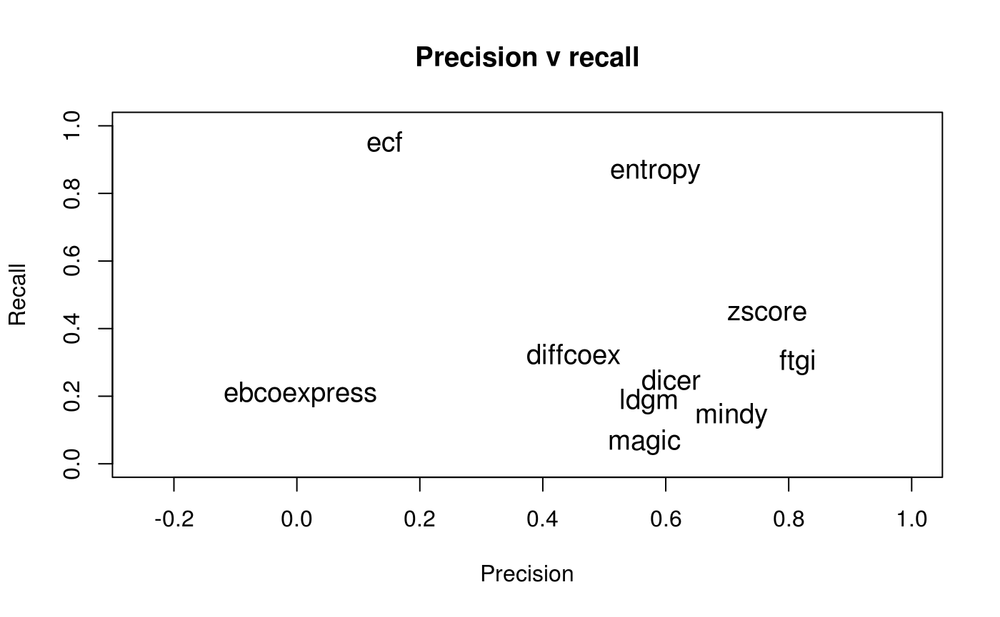

Evaluating differential co-expression methods using dcanr
Dharmesh D Bhuva
Bioinformatics Division, Walter and Eliza Hall Institute of Medical Research, Parkville, VIC 3052, Australia2019-08-06
Source:vignettes/dcanr_evaluation_vignette.Rmd
dcanr_evaluation_vignette.RmdIntroduction
Along with implementations for several differential co-expression analysis methods, this package provides an evaluation framework to benchmark methods. Real data are rarely available for the evaluation of differential co-expression methods as such experiments are difficult to perform and in almost all cases, the true/gold-standard network is unknown. As such, simulations are the only means to perform a rigorous comparison and evaluation. Data from 812 simulations were generated with settings and parameters are described in Bhuva et al. (manuscript in preparation) and results included here. Along with the data, a suite of visualisation and performance metrics are implemented.
This vignette describes functions in this package that enable comparative evaluation of inference methods. All methods implemented in the package can be evaluated and novel methods can be integrated into the evaluation framework with relative ease.
Simulation setup used to create the data
A dynamical systems simulator was used to generate synthetic expression data with differential associations. Regulatory networks of 150 genes were sampled from a S. cerevisiae regulatory network. Perturbation experiments were performed when simulating data to induce differential associations. Simulation parameters and networks were sampled to produce 812 distinct simulations. The dataset included in dcanr, sim102, is an example of one such simulation. Two knock-downs were performed simultaneously but independent of each other, therefore, some samples may have both knock-downs while other may have either one or none. Details on the simulation procedure can be found in the Bhuva et al. (manuscript in preparation). Up to 500 observations are sampled in each simulation.
Download the full simulated dataset
As the simulation is computationally intensive, data from the 812 simulations have been precomputed and are available at https://melbourne.figshare.com/articles/812_simulated_expression_datasets_for_differential_co-expression_analysis/8010176. The downloaded file contains a list of simulation results which includes sim102, packaged with dcanr. Each simulation can be accessed as shown below.
Running a pipeline on a simulation
Evaluations in the package are performed by creating an analysis pipeline and packaging this into a function. Three possible ways exist to perform this:
- Using standard in-built pipelines
- Using custom pipelines
- Retrieving pre-computed results from the standard pipelines
All of the above are made possible using a single function dcPipeline and are processed depending on the arguments specified.
Standard pipelines
A standard pipeline runs the in-built inference methods with their default parameters. All 4 steps of an analysis are performed in sequence as described in their respective publications. To run a standard pipeline on a simulation, simply pass in a simulation and a method name from dcMethods().
library(dcanr)
#load the data: a simulation
data(sim102)
#run a standard pipeline with the z-score method
dcnets <- dcPipeline(sim102, dc.func = 'zscore')
#plot the source network, true differential network and inferred networks
op <- par(no.readonly = TRUE)
par(mfrow = c(2, 2))
plotSimNetwork(sim102, main = 'Regulatory network')
plotSimNetwork(sim102, what = 'association', main = 'True differential association network')
plot(dcnets$ADR1, main = 'ADR1 KD predicted network')
plot(dcnets$UME6, main = 'UME6 KD predicted network')![Differential network analysis on simulations. Top-left to bottom-right: The original regulatory network used for simulations; the true induced differential network that results from both ADR1 and UME6 knock-downs (KDs); the predicted ADR1 knock-down differential network, and; the predicted UME6 knock-down differential network. Reg and green edges in the regulatory network represent activation and repression respectively. Edges in the differential network are coloured based on the knock-down that results in their differential co-expression. True positives in the predicted network are coloured based on their knock-down while false positives are coloured grey](dcanr_evaluation_vignette_files/figure-html/unnamed-chunk-2-1.png)
Differential network analysis on simulations. Top-left to bottom-right: The original regulatory network used for simulations; the true induced differential network that results from both ADR1 and UME6 knock-downs (KDs); the predicted ADR1 knock-down differential network, and; the predicted UME6 knock-down differential network. Reg and green edges in the regulatory network represent activation and repression respectively. Edges in the differential network are coloured based on the knock-down that results in their differential co-expression. True positives in the predicted network are coloured based on their knock-down while false positives are coloured grey
Results from a pipeline are provided as a list of igraph objects representing the inferred networks, one for each knock-down. True positive predictions are coloured based on the colour of the knocked-down node and false positives are coloured grey. The plotSimNetwork function can be used to retrieve and plot the true differential networks and the source regulatory network.
Any additional parameters for intermediate steps in a standard pipeline can be passed as shown in the example below. However, doing so will produce results different from the precomputed results discussed in (Section @ref(precomp)).
#run a standard pipeline with the z-score method with custom params
dcnets_sp <- dcPipeline(sim102,
dc.func = 'zscore',
cor.method = 'spearman', #use Spearman's correlation
thresh = 0.2) #cut-off for creating the networkIf the parameters need to be specified for each condition, the cond.args argument can be used. For example, the LDGM method requires the regularisation parameter to be specified for each condition. Since sim102 has 2 conditions (ADR1-knockdown and UME6-knockdown), ldgm.lambda needs to be specified for each case. Alternatively, the number of edges in the DC network resulting from each condition can be passed using ldgm.ntarget in cond.args.
Custom pipelines
The most common use case of an evaluation framework is to benchmark new methods. As such, this framework allows seamless integration of new methods. This is made possible in dcanr by providing a single function to the dcPipeline method. This function should follow the skeleton below:
#emat, a named matrix with samples along the columns and genes along the rows
#condition, a binary named vector consisiting of 1's and 2's
#returns a named adjacency matrix or an igraph object
myInference <- function(emat, condition, ...) {
#your code here
return(dcnet)
}The following code shows the function used to call an in-built pipeline and how a custom pipeline can be run.
#custom pipeline function
analysisInbuilt <- function(emat, condition, dc.method = 'zscore', ...) {
#compute scores
score = dcScore(emat, condition, dc.method, ...)
#perform statistical test
pvals = dcTest(score, emat, condition, ...)
#adjust tests for multiple testing
adjp = dcAdjust(pvals, ...)
#threshold and generate network
dcnet = dcNetwork(score, adjp, ...)
return(dcnet)
}
#call the custom pipeline
custom_nets <- dcPipeline(sim102, dc.func = analysisInbuilt)Retrieving pre-computed results
Following evaluation of a novel method, it is generally of interest to compare how it performs against previous methods. Re-computing predictions for the 10 methods implemented in this package can be time consuming. As such, all simulations come packaged with results from applying a standard pipeline using each inference method. Pre-computed results are also retrieved using the dcPipeline function, with the precomputed argument set to TRUE.
#retrieve results of applying all available methods
allnets <- lapply(dcMethods(), function(m) {
dcPipeline(sim102, dc.func = m, precomputed = TRUE)
})
names(allnets) <- dcMethods() #name the results based on methods
#get the size of the UME6 KD differential network
netsizes <- lapply(allnets, function(net) {
length(igraph::E(net$UME6))
})
print(unlist(netsizes))## dicer diffcoex ebcoexpress ecf entropy ftgi
## 119 175 2914 1979 351 8
## ggm-based ldgm magic mindy zscore
## 0 42 46 27 91Evaluate a pipeline
After inferring the differential co-expression network, the final step is to evaluate performance based on the truth. True differential networks are computed by performing a sensitivity analysis as described in the Bhuva et al. (manuscript in preparation). Three levels of true differential networks are generated:
- Direct - this represents direct TF-target regulatory interactions that are affected by the knock-down (condition)
- Influence - this network includes upstream TF-target interactions which are indirect but causative
- Association - this network includes all associations in the influence network but adds all non-causative associations that are differential when conditioned on the knock-down
All three levels of truth are included within the simulated data. Predicted networks can be evaluated against any of these. We recommend using the differential association network.
Along with the true differential co-expression network, a metric is required to summarise performance of a method. The package provides 6 different metrics which can be accessed by calling perfMethods().
## [1] "AC" "accuracy" "f.measure" "MCC" "precision" "recall"Evaluation is performed using the dcEvaluate function. We will run this with the precomputed inferences as described in (Section @ref(precomp)). The F1-measure will be computed to assess performance.
#compute the F1-measure for the prediction made by each method
f1_scores <- lapply(allnets, function (net) {
dcEvaluate(sim102, net, truth.type = 'association', combine = TRUE)
})
print(sort(unlist(f1_scores), decreasing = TRUE))## entropy zscore ftgi diffcoex dicer ldgm
## 0.69625247 0.56259660 0.43928571 0.37606838 0.35130435 0.27777778
## ecf mindy magic ebcoexpress ggm-based
## 0.24793388 0.23625255 0.11428571 0.01183932 0.00000000#compute the Matthew's correlation coefficient of the z-score inference
z_mcc <- dcEvaluate(sim102, dcnets, perf.method = 'MCC')
print(z_mcc)## [1] 0.5761074These metrics can be combined to learn more about the advantages and limitations of different methods. For instance, the precision and recall characteristics of the different methods can be computed. For sim102, this shows that the entropy-based method excels at recall while the z-score based method has high precision.
#compute precision
dcprec <- lapply(allnets, function (net) {
dcEvaluate(sim102, net, perf.method = 'precision')
})
#compute recall
dcrecall <- lapply(allnets, function (net) {
dcEvaluate(sim102, net, perf.method = 'recall')
})
Session info
## R version 3.6.1 (2019-07-05)
## Platform: x86_64-pc-linux-gnu (64-bit)
## Running under: CentOS Linux 7 (Core)
##
## Matrix products: default
## BLAS: /stornext/System/data/apps/R/R-3.6.1/lib64/R/lib/libRblas.so
## LAPACK: /stornext/System/data/apps/R/R-3.6.1/lib64/R/lib/libRlapack.so
##
## locale:
## [1] LC_CTYPE=en_US.UTF-8 LC_NUMERIC=C
## [3] LC_TIME=en_US.UTF-8 LC_COLLATE=en_US.UTF-8
## [5] LC_MONETARY=en_US.UTF-8 LC_MESSAGES=en_US.UTF-8
## [7] LC_PAPER=en_US.UTF-8 LC_NAME=C
## [9] LC_ADDRESS=C LC_TELEPHONE=C
## [11] LC_MEASUREMENT=en_US.UTF-8 LC_IDENTIFICATION=C
##
## attached base packages:
## [1] stats graphics grDevices utils datasets methods base
##
## other attached packages:
## [1] dcanr_1.1.4 BiocStyle_2.12.0
##
## loaded via a namespace (and not attached):
## [1] Rcpp_1.0.1 highr_0.8 RColorBrewer_1.1-2
## [4] compiler_3.6.1 BiocManager_1.30.4 iterators_1.0.10
## [7] tools_3.6.1 rngtools_1.4 digest_0.6.20
## [10] lattice_0.20-38 evaluate_0.14 memoise_1.1.0
## [13] pkgconfig_2.0.2 rlang_0.4.0 doRNG_1.7.1
## [16] Matrix_1.2-17 foreach_1.4.4 bibtex_0.4.2
## [19] igraph_1.2.4.1 registry_0.5-1 rstudioapi_0.10
## [22] commonmark_1.7 yaml_2.2.0 parallel_3.6.1
## [25] pkgdown_1.3.0 xfun_0.8 withr_2.1.2
## [28] stringr_1.4.0 pkgmaker_0.27 roxygen2_6.1.1
## [31] xml2_1.2.0 knitr_1.23 GlobalOptions_0.1.0
## [34] desc_1.2.0 fs_1.3.1 grid_3.6.1
## [37] rprojroot_1.3-2 R6_2.4.0 rmarkdown_1.13
## [40] bookdown_0.11 magrittr_1.5 backports_1.1.4
## [43] codetools_0.2-16 htmltools_0.3.6 MASS_7.3-51.4
## [46] assertthat_0.2.1 shape_1.4.4 colorspace_1.4-1
## [49] circlize_0.4.6 xtable_1.8-4 stringi_1.4.3
## [52] crayon_1.3.4